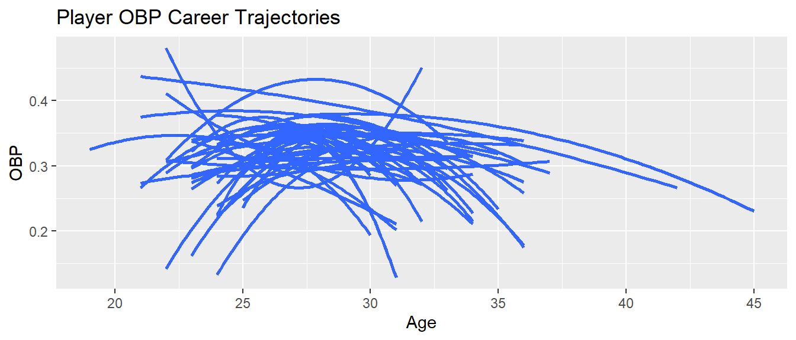
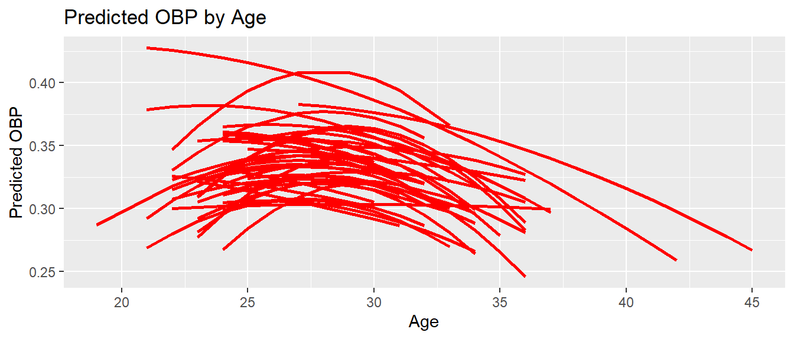
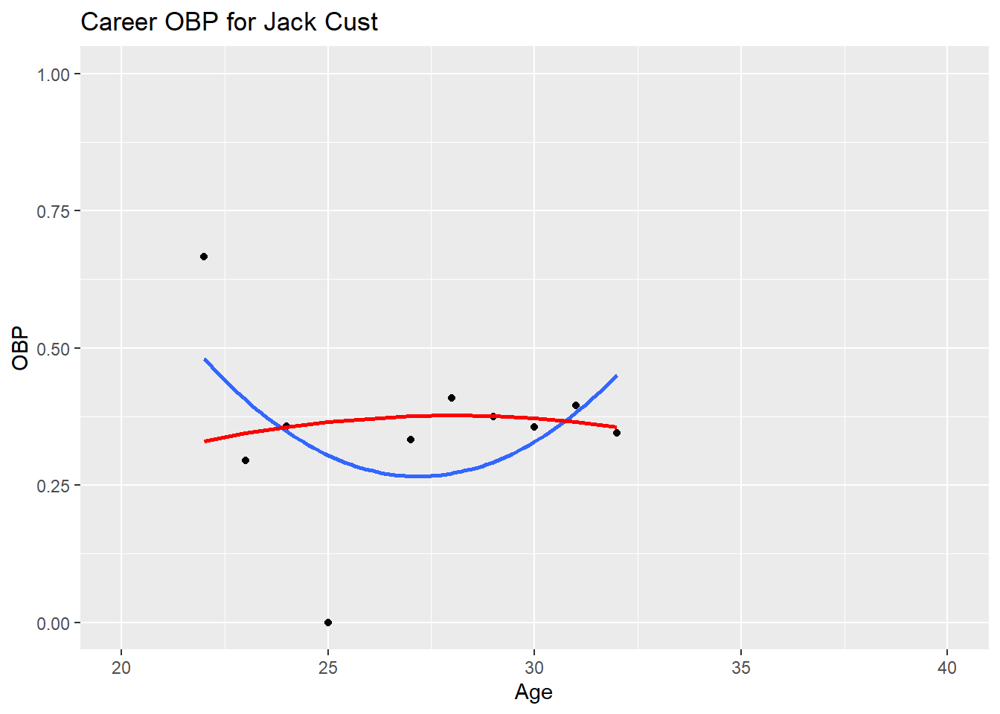
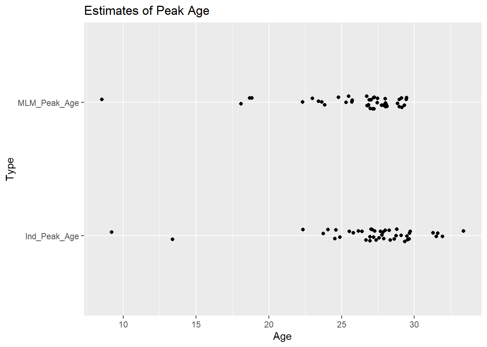

install.packages(c('rstan','brms','StanHeaders'))MA388 Sabermetrics: Lesson 20
Multilevel Modeling
Admin Note
I’m using some packages (rstan, StanHeaders, and brms) in this lesson that may not be easy to get working properly depending on your version of R.With R 4.5 installed, I needed to first install RTools for R 4.5 (I already had it for R 4.4). Then I was able to install the below packages from CRAN, and everything worked perfectly. In R, packages are often version-specific. Some packages will have to be updated when you update your version of R.
Multilevel Modeling
Today, we are going to investigate the limitations of the quadratic trajectories and discuss improvements using Bayesian statistics. The reference for this lesson is:
- “Multilevel Modeling of OBP Trajectories” by Jim Albert. https://baseballwithr.wordpress.com/2019/11/25/multilevel-modeling-of-obp-trajectories/
Learning Objectives:
Gain appreciation for how Bayesian statistics can help us combine prior knowledge with new observations to update our beliefs.
Gain appreciation for how multilevel modeling can “pool” information to arrive at better estimates for individuals.
Players Who Debuted in 2001
Let’s find the players who debuted in the year 2001 with at least 1000 at-bats.
library(tidyverse)
library(lubridate)
library(ggrepel)
library(Lahman)# Identify players with debut in the year 2001.
People |>
filter(year(debut) == 2001) |>
pull(playerID) -> year2001_ids
# Restrict to players with at least 1000 at-bats.
Batting |>
filter(playerID %in% year2001_ids) |>
group_by(playerID) |>
summarize(AB = sum(AB)) |>
filter(AB > 1000) |>
pull(playerID) -> player_idsThe players who debuted in 2001 who would go on to have at least 1000 at bats are:
library(knitr)
People |>
filter(playerID %in% player_ids) |>
select(nameFirst, nameLast) |>
kable()| nameFirst | nameLast |
|---|---|
| Angel | Berroa |
| Wilson | Betemit |
| Larry | Bigbie |
| Endy | Chavez |
| Alex | Cintron |
| Michael | Cuddyer |
| Jack | Cust |
| Adam | Dunn |
| David | Eckstein |
| Johnny | Estrada |
| Adam | Everett |
| Ryan | Freel |
| Jay | Gibbons |
| Marcus | Giles |
| Willie | Harris |
| Shea | Hillenbrand |
| Brandon | Inge |
| Cesar | Izturis |
| Nick | Johnson |
| Bobby | Kielty |
| Felipe | Lopez |
| Rob | Mackowiak |
| Jason | Michaels |
| Dustan | Mohr |
| Craig | Monroe |
| Lyle | Overbay |
| Carlos | Peña |
| Jason | Phillips |
| Scott | Podsednik |
| Albert | Pujols |
| Nick | Punto |
| Juan | Rivera |
| Brian | Roberts |
| Aaron | Rowand |
| Alex | Sanchez |
| Junior | Spivey |
| Ichiro | Suzuki |
| Yorvit | Torrealba |
| Juan | Uribe |
| Ramon | Vazquez |
| Brad | Wilkerson |
| Craig | Wilson |
| Jack | Wilson |
OBP Trajectories
Let’s look at their OBP trajectories using the quadratic model fit individually to each player. First, we need a function to obtain players’ basic stats.
# Get basic stats for players, including OBP.
get_stats <- function(player_id){
Batting |>
filter(playerID == player_id) |>
left_join(People, by = "playerID") |>
mutate(birthyear = ifelse(birthMonth >= 7,
birthYear + 1, birthYear),
Age = yearID - birthyear,
SLG = (H - X2B - X3B - HR +
2 * X2B + 3*X3B + 4 * HR)/AB,
OBP = (H + BB + HBP)/(AB + BB+ HBP + SF),
OPS = SLG + OBP,
AVG = H/AB,
HR_rate = HR/AB,
OB = (H + BB + HBP),
PA = (AB + BB + HBP + SF)) |>
select(playerID, Age, yearID, SLG, OBP, OPS, AVG, HR_rate, OB, PA, HR, AB)
}Now we need a function to fit a quadratic model to season OBP stats for each player.
# Fit the quadratic model on pg 182 of the text.
fit_ind_model <- function(player){
fit = player_stats |>
filter(playerID == player) |>
lm(OBP ~ I(Age - 30) + I((Age - 30)^2), data = _)
A <- coef(fit)[1]
B <- coef(fit)[2]
C <- coef(fit)[3]
Player <- People |>
filter(playerID == player) |>
select(nameFirst, nameLast) |>
distinct() |>
mutate(Name = str_c(nameFirst, " ", nameLast)) |>
pull(Name)
# Return a dataframe with the player name and model coefficients.
tibble(Player,
A = A,
B = B,
C = C)
}Get the stats for our identified players, fit the quadratic models, and plot the estimated trajectories.
# Get statistics by age.
player_ids |>
map_df(get_stats) |>
left_join(People |>
select(nameLast, nameFirst, playerID)) -> player_stats
# Get models for each player.
player_ids |>
map_df(fit_ind_model) -> player_ind_models
# Plot trajectories for each player.
player_stats |>
ggplot(aes(x = Age, y = OBP, group = playerID)) +
geom_smooth(method = "lm",
formula = y ~ x + I(x^2),
se = FALSE)+
labs(title = "Player OBP Career Trajectories")
What do you think of these models?
How do we fix these issues?
Bayesian Approach
For additional information, see Chapter 13.2 in Probability and Bayesian Modeling by Jim Albert and Jingchen Hu (https://bayesball.github.io/BOOK/case-studies.html#career-trajectories).
\[p(\beta_i \mid \text{data}) \propto p(\text{data}_i \mid \beta_i) \times p(\beta_i \mid \mu, \Sigma)\]
1. The Logistic Regression
Suppose we have a binary outcome \(y_i \in \{0,1\}\) for individual \(i\), and a predictor \(x_i\).
The logistic regression model is:
\[ \Pr(y_i = 1 \mid x_i) = \pi_i \]
where we link \(\pi_i\) to the linear predictor via the logit function:
\[ \text{logit}(\pi_i) = \log\frac{\pi_i}{1-\pi_i} = \beta_0 + \beta_1 x_i \]
Equivalently, we can write the probability as:
\[ \pi_i = \frac{\exp(\beta_0 + \beta_1 x_i)}{1 + \exp(\beta_0 + \beta_1 x_i)} \]
2. Adding Multiple Observations per Group
Suppose we now have multiple observations \(y_{ij}\) for individuals \(i\) in groups \(j\).
A simple approach is pooled logistic regression:
\[ \text{logit}(\pi_{ij}) = \beta_0 + \beta_1 x_{ij} \]
- Here we ignore group differences and assume all individuals share the same \(\beta\).
- This can work if the group effects are small, but often groups vary systematically.
3. Introducing Multilevel Structure
To account for group-level variation, we allow the intercept (and/or slopes) to vary by group:
\[ \text{logit}(\pi_{ij}) = \beta_{0j} + \beta_1 x_{ij} \]
where each group-level intercept \(\beta_{0j}\) is modeled as:
\[ \beta_{0j} \sim \mathcal{N}(\gamma_0, \tau^2) \]
- \(\gamma_0\) is the overall mean intercept across groups.
- \(\tau^2\) is the between-group variance.
This is the essence of multilevel (hierarchical) modeling: we “shrink” group-level estimates toward the overall mean.
4. Fully Multilevel Model (Random Intercepts & Slopes)
We can also allow slopes to vary by group:
\[ \text{logit}(\pi_{ij}) = \beta_{0j} + \beta_{1j} x_{ij} \]
with group-level parameters:
\[ \begin{pmatrix} \beta_{0j} \\ \beta_{1j} \end{pmatrix} \sim \mathcal{N} \left( \begin{pmatrix} \gamma_0 \\ \gamma_1 \end{pmatrix}, \begin{pmatrix} \tau_0^2 & \tau_{01} \\ \tau_{01} & \tau_1^2 \end{pmatrix} \right) \]
- This allows each group to have its own intercept and slope, while still borrowing strength across groups via the multivariate normal prior.
5. Connection to Logit and Pooled Regression
- If \(\tau^2 \to 0\), all \(\beta_{0j} \approx \gamma_0\), and the multilevel model reduces to pooled logistic regression.
- If \(\tau^2\) is large, group intercepts are allowed to vary freely, approximating separate logistic regressions per group.
This shows how the logit link for individual observations naturally extends into a multilevel framework.
Trajectories from Multilevel Models
Now, let’s fit trajectories that pool information from all the players in the data set.
library(brms)
library(rstan)
player_stats |>
mutate(AgeD = Age - 30,
Player = str_c(nameFirst, " ", nameLast)) -> player_stats
# Fit the Bayes regression model (brms).
fit <- brm(OB | trials(PA) ~ AgeD + I(AgeD ^ 2) + (AgeD + I(AgeD ^ 2) | Player),
data = player_stats,
family = binomial("logit"),
silent = TRUE,
refresh = 0)
# Store the fits.
Player_Fits <- coef(fit)$Player[, "Estimate", ] |>
as_tibble(rownames = "Player") |>
rename(b0.hat.mlm = Intercept,
b1.hat.mlm = AgeD,
b2.hat.mlm = IAgeDE2)Now we’ve fit two models for each player. Let’s store the results in a common data frame and plot our multi-level modeling results.
# Merge the findings from our two types of models.
both_models <- inner_join(player_ind_models, Player_Fits, by = "Player")
# Find estimates of OBP probs at each age. (Note: plogis is the logit function.)
player_stats |>
left_join(Player_Fits, by = "Player") |>
mutate(OBP.pred = plogis(b0.hat.mlm + b1.hat.mlm * AgeD + b2.hat.mlm * AgeD^2)) ->
player_stats
player_stats |>
ggplot(aes(x = Age,
y = OBP.pred,
group = Player)) +
geom_line(color = "red", size = 1) +
labs(y = "Predicted OBP",
title = "Predicted OBP by Age")
What do you think of the new trajectories?
Let’s focus on one player who had a really weird individual trajectory:
player_stats |>
filter(playerID == "custja01") |>
ggplot(aes(x = Age, y = OBP)) +
geom_point() +
geom_smooth(method = "lm",
formula = y ~ x + I(x^2), se = FALSE) +
ylim(0,1) + xlim(20,40) +
geom_line(aes(y = OBP.pred), color = "red", size = 1) +
labs(title = "Career OBP for Jack Cust")
Let’s look at the peak ages as determined by each of the models. What differences do you observe?
# Find peak ages using two models.
both_models |>
mutate(Ind_Peak_Age = 30 - B / 2 / C,
MLM_Peak_Age = 30 - b1.hat.mlm / 2 / b2.hat.mlm) |>
select(Ind_Peak_Age, MLM_Peak_Age) |>
pivot_longer(everything(),
names_to = "Type",
values_to = "Age") -> S
# Graph two sets of peak ages.
ggplot(S, aes(x = Age, y = Type)) +
geom_jitter(height = 0.05, width = 0) +
labs(title = "Estimates of Peak Age")